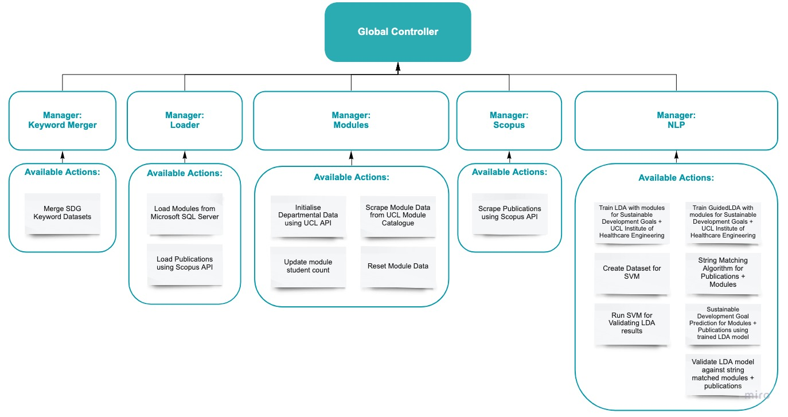
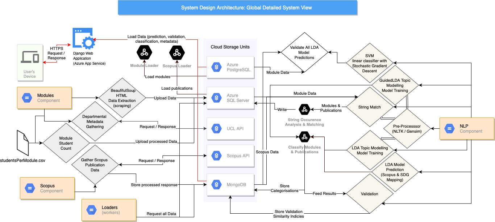
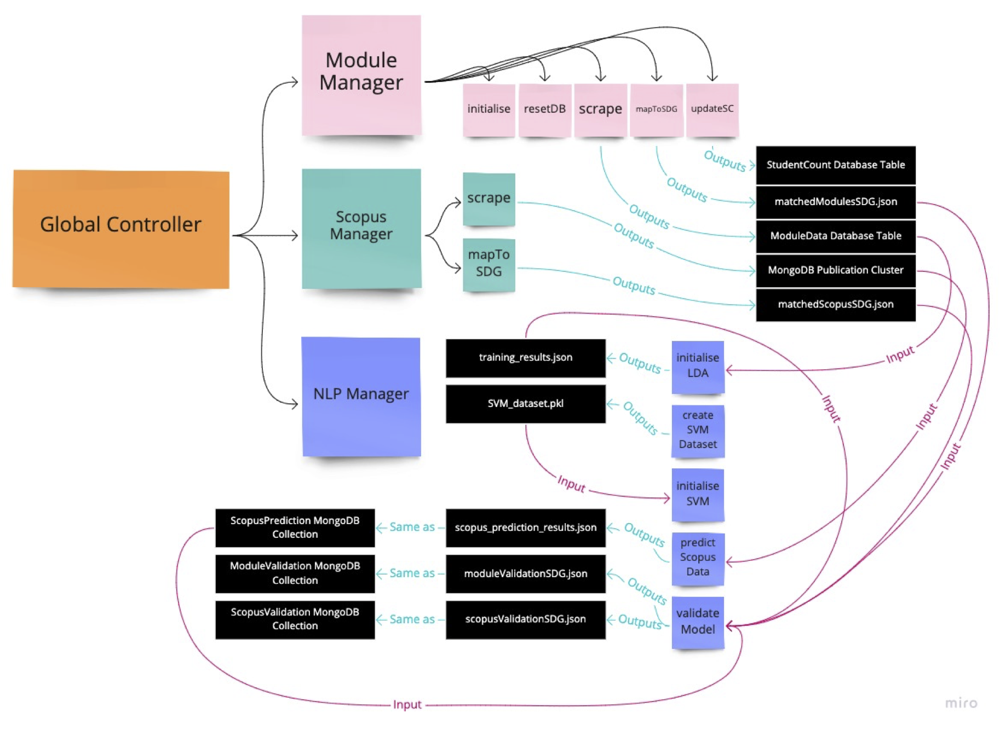
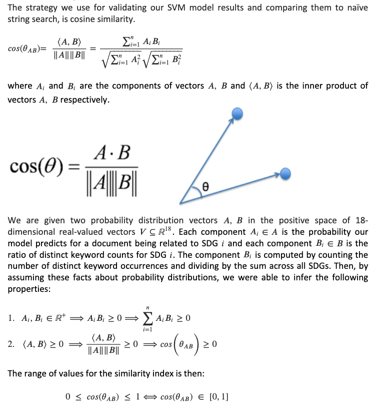
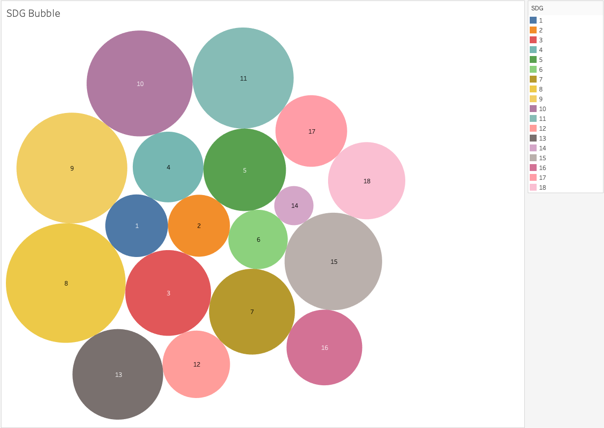
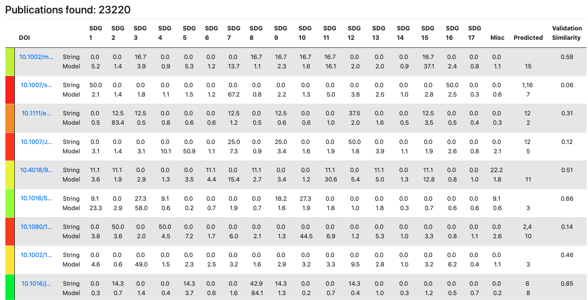
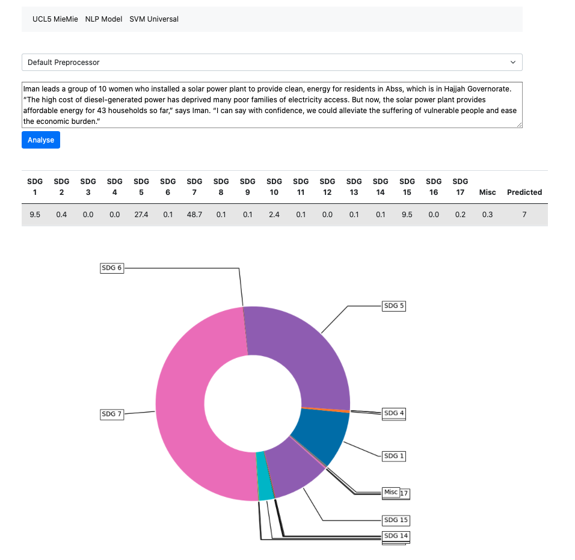

What it does:
Scrape, map and generate classifiers with the intention of generating an overview of the extent of activity already taking place at an organization
Project Background & Client Introduction
Our project came about due to a growing need within UCL, centred around the research facility in which their research administration, namely finding various things based on their topic of research such as names and other key terms. This search was taking longer and longer each year due to the increasing number of articles, papers and other publications on each topic coming out each year. This got us connected to various researchers varying from professors, PhD research students and sustainable development researchers. They all required a method to speed up this process and to help get more accurate data automatically rather than repeating this each year manually.
You may find the client's details below:
Neel Desai - neel.desai.13@ucl.ac.uk
Marilyn Aviles - marilyn.aviles@ucl.ac.uk
Prof Ann Blandford - ann.blandford@ucl.ac.uk
Dr. Simon Knowles - s.knowles@ucl.ac.uk
Project Goals
Our main project goals include trying to achieve a way for all researchers to be able to find and contact other researchers that are working on or have worked on the same field of study as them. The project goals also include trying to ensure that the RPS database can be scraped in order to find all papers that are linked to the search field used that can then be used to find all related researchers.
Requirement Gathering
We gathered various requirement in the form of a MOSCOW list that was created through a series of group and individual meetings with each of our clients in order to gather all the features and methods that are needed as well as the priority of each of these. We went over these features multiple times with our clients and added a few as well as splitting up other requirements into different parts.
Personas
Use Cases
Alison has trouble identifying researchers to collaborate with across the IHE. She would like to use this tool as a quick and efficient way of searching for researchers across different engineering fields. She wants to establish connections across UCL and monitor the progress of her colleagues.
Jonathan is a PhD researcher who would use this data tool in order to quickly find and sort through different research topics that have or currently are conducted at his university. He aims to gain insight into the extent to which UCL is involved in promotion of the 2015 UN’s Sustainable Development Goals in both teaching and research.
Functional MoSCoW List
| ID | Requirement Description | Priority |
|---|---|---|
| 1 | Scrape UCL research publications from Scopus by leveraging the Scopus API to gather the following data: {title, abstract, DOI, subject areas, index keywords, author keywords, elsevier link, …}. | Must |
| 2 | Scrape UCL modules from the UCL module catalogue by leveraging the UCL API to acquire the following data: {description, title, ID, module lead, credit value, …}. | Must |
| 3 | Produce an extensive set of keywords (CSV file) for UN SDGs (United Nations Sustainable Development Goals) and IHE (Institute of Healthcare Engineering) topics. | Must |
| 4 | Use NLP to preprocess text for UCL module fields: {description, name} and Scopus research publication fields: {title, abstract, index keywords, author keywords}. | Must |
| 5 | Train a semi-supervised NLP model to map UCL module catalogue descriptions to UN SDGs (United Nations Sustainable Development Goals). | Must |
| 6 | Train a semi-supervised NLP model to map Scopus research publications to IHE (Institute of Healthcare Engineering) research specialities and subject areas. | Must |
| 7 | Providing the most up-to-date data on Scopus research publications and UCL course modules. | Must |
| 8 | Django web application implemented and fully deployed. | Must |
| 9 | Django keyword search functionality for Scopus research publications. | Must |
| 10 | Train a supervised machine learning model, such as an SVM (Support Vector Machine), aimed at reducing the number of false positives from the NLP model. | Should |
| 11 | Use the NLP model, trained on SDG-specific keywords, to make SDG mapping predictions for UCL research publications from Scopus. | Should |
| 12 | Validate the NLP model using a string matching algorithm to count SDG-specific keyword occurrences and compare the probability distribution with that produced by the NLP model, trained on the same set of SDG-specific keywords (represents a similarity index in the range [0,1]). | Should |
| 13 | Machine Learning visualisation using TSNE Clustering (via dimensionality reduction) and Intertopic Distance Map (via multidimensional scaling) for SDG & IHE topic mappings, deployed on Django. | Should |
| 14 | Visualisation of SDG results using Tableau (accessed through database credentials). Should be able to view SDG sizes in accordance to the number of students per module/department/faculty across UCL. | Should |
| 15 | Walkthrough guide describing how to use the final product & system maintenance (for rerunning the scraping and retraining the NLP model on an annual basis). | Should |
| 16 | Django keyword search functionality for UCL modules, from the module catalogue (bonus feature). | Could |
| 17 | Django logic for visualising validation using similarity index, mapping from values in the range [0,1] to a red-green colour gradient [red, green]. | Could |
| 18 | Django button for exporting Scopus keyword search results to a CSV file format (bonus feature for exporting UCL module keyword searches). | Could |
| 19 | Django option for sorting rows of the NLP model results table, based on the validation similarity index (red-green colour gradient). | Could |
Non-Functional MoSCoW List
| ID | Requirement Description | Priority |
|---|---|---|
| 1 | Will have a responsive Django web interface | Must |
| 2 | Web interface will be reliable and publically available at all times | Must |
| 3 | Product will be scalable for a constantly increasing number of modules and publications | Must |
| 4 | Avoids any possible legal or licensing conflicts | Must |
| 5 | Data integrity for publications and modules | Must |
| 6 | Interface will be intuitive and easily usable | Should |
| 7 | There will be a home button on a navigation bar for ease of browsing | Should |
| 8 | Main thematic colour across the site will be #007FFF | Should |
| 9 | Source code will be highly readable to any external user | Could |
| 10 | Informative, multi-page visually pleasing user interface | Would |
Related Projects Review
One of the previous projects conducted is the “Bubble-Chart Project”, which is a pilot project exploring the use of programming techniques as a tool to create an ontology-based mapping of healthcare engineering and digital health expertise across the Institute of Healthcare Engineering. Inspired by the IDH Bubble Chart, the aim of this project is to update the original version with new information and themed-based categories that include the wider breadth of healthcare engineering expertise across IHE. The first phase of the pilot explored using UCL’s RPS platform as a source data for the project.

What we can learn from this project is the data sources used, as well as explore classification techniques for classifying researchers’ publications into appropriate fields. Subsequently, given existing data that was put together manually, UCL5 MieMie aims to automate data scraping and validation using Python programming language and deployment technologies.
Technology Review
Possible Solutions:
Possible solutions include using Python’s scraping library Beautifulsoup to gather data from a specified source, setting up a deployment environment in Microsoft Azure and utilising Azure Functions for timing each scrape and validation automatically. The code base itself resides on a GitHub repository. The idea is to perform an initial large scale scrape, gathering initial set of data in a structured and normalised manner. Upon completion, the next step involves a different set of programs that run with the purpose of checking the source data set for potential updates / changes to the data. If any change is observed, the scripts are to stage a validation on the project’s data.
Possible Design Structure
The code structure would involve a general controller to manage a potentially threaded program, running multiple validation scripts on an existing database. Azure Functions allows time the scrapes, where the python file object is passed to the azure.functions.TimerRequest object to perform a set operation. The time is specified in the CRONTAB notation - “schedule: 0 0 * * * *” [1], which specifies that an action is to be performed once at the top of every hour).
Possible Programming Languages / APIs
To gather data, we are going to be using RPS UCL data repository. It has several access types, and the public section of it is accessible through the use of their API [2].
NLP and Topic Modelling
Background Research
A problem encountered by one of our clients was to understand and map teaching at UCL to the 17 sustainable development goals. The SDGs were set by the United Nations in 2015 and are intended to be achieved by 2030. These goals are designed to achieve a better and more sustainable future for everyone. The proposed solution is to map research publications from Scopus API and modules from the UCL module catalogue to a subset of the 17 SDGs. We have been given a list of SDG-specific keywords to search through the abstract and description of each research paper and module respectively.
This image shows a small section of the SDG-specific keywords where:
SDG 1: No Poverty –“End poverty in all its forms everywhere”
SDG 2: Zero Hunger – “End hunger, achieve food security and improved nutrition and promote sustainable agriculture”
SDG 3: Good Health and Well-Being – “Ensure healthy lives and promote well-being for all at all ages”
SDG 4: Quality Education – “Ensure inclusive and equitable quality education and promote lifelong learning opportunities for all”
SDG 5: Gender Equality – “Achieve gender equality and empower all women and girls”
The approach described in the webinar recording “Practical approaches to mapping university contributions to the Sustainable Development Goals (SDGs)” used a list of keywords compiled by Monash University and SDSN Australia/Pacific. The methodology described by Macquarie University Sustainability Department is to collect together different subthemes and map each subtheme onto each SDG. The information was given in a table where each subtheme is a row of the table and each SDG is a column of the table.
Proposed Solution
Our first solution to carry out the mapping is to do a string search through the description of a module for each SDG-specific keyword, count the number of occurrences of each keyword and sum those up for each SDG (sustainable development goal). However, this approach has many flaws. If the module description contains very little or doesn’t contain any SDG-specific keywords but still teaches students about many of the SDGs then data integrity is lost, causing modules to have inaccurate labels. Moreover, we have the same problem if a module contains many of the SDG-specific keywords but doesn’t educate students about the SDGs.
Improving on the string matching approach, our next solution aims to carry out the mapping by manually annotating each module from the UCL module catalogue to a subset of the SDGs. However, we believe this solution to be outside the scope of our knowledge since we would need a greater understanding of how the SDG-specific keywords were compiled and teaching across different faculties and departments. Our annotation will be inaccurate, biased and very time consuming to annotate over 5000 UCL modules. However, with more time and research this approach will the best in terms of accuracy and reliability.
The proposed solution is very similar to the subtheme approach by Macquarie University. We have decided to use semi-supervised LDA (Latent Dirichlet Allocation) called GuidedLDA. The reason for using semi-supervised LDA instead of the general LDA (topic modelling) algorithm is that it allows us to control the generated topics by using the SDG-specific keywords as seed topics. Thus, each generated topic corresponds to one of the 17 SDGs. The model encourages topics to be built around these seed words, with some set confidence, whilst also uncovering more words. By using the seeded topics (SDG-specific keywords) as a reference point, it allows us to classify known topics more easily without manually annotating over 5000 UCL modules. Thus, encouraging topics to converge in the direction specified by the SDG-specific keywords.
Topic Modelling (GuidedLDA)
Latent Dirichlet Allocation (LDA) is an unsupervised topic modelling algorithm used to classify text in a document to a topic. The aim of LDA is to find topics which best describe a corpus of documents, which in our case are the UN Sustainable Development Goals and the UCL module catalogue respectively. LDA manages a topic per document model and words per topic model, both of which use Dirichlet distributions from probability theory. The words per topic model describes how to compute the probability of a word belonging to a particular topic, whereas the topic per document model describes for each document the probability a topic is related to that document. This model should be used to finalize the mapping of UCL modules to SDGs.
The interface for the GuidedLDA follows conventions from the scikit-learn machine learning library. It has been production trained on half a million documents, ran predictions on millions and manually checked thousands of topics. The algorithmic design is explained in the paper “Incorporating Lexical Priors into Topic Models” by J. Jagarlamudi, H. Daume III and R. Udupa. The paper explains how priors (seeded words) can be set into a topic model to guide it in the right direction.
The seeded words should be representative of the underlying topics in a corpus. It uses these seeds to improve topic-word distributions and document-topic distributions. To improve the topic-word distribution, each topic prefers to generate words that are related to the words in the seed set. To improve the document-topic distribution, the model is encouraged to select document-level topics based on the existence of seed words in a document.
Another method of performing the mapping is document clustering. The model described in the paper uses a baseline (maxCluster) which counts the number of tokens in each document from each of the seed topics and assigns the document to the seed topic which has the most tokens, resulting in a clustering of documents based on the seed topic assigned to them. The purpose of this baseline is to evaluate the effectiveness of the SDG keywords for our module catalogue corpus, and to use it as a means of validation for the SDG mapping with GuidedLDA.
The words per topic model describes how to compute the probability of a word belonging to a particular topic. The algorithm shown below describes the main stages for generating topic and word distributions:
For each document d∈D, randomly assign each word in the document to one of the k topics (where k is the number of topics) using a discrete uniform distribution (LDA). For GuidedLDA, during initialization, give some extra boost to the seeded words, such that they are more likely to be assigned to the seeded topic.
For each document d∈D, go through each word w∈d and compute the following:
For each topic t, compute P(t│d): proportion of words in document d that are currently assigned to topic t, excluding the word w. If there are a lot of words in document d that belong to topic t, then it is more likely that the word w belongs to topic t.
For each topic t, compute P(w│t): proportion of assignments to topic t across all documents that come from the word w. If a word has a high probability of being in a topic, all documents which have w will be more strongly associated with topic t (the converse is also true).
For each topic t, update the probability for the word w belonging to topic t as: P(t│w,d)=P(t│d)∙P(w│t)
Repeat the previous step many times, with each iteration yielding more accurate and reliable distributions. For GuidedLDA, there should be a higher count of seeded words belonging to seeded topics and the convergence of the model will change.
In LDA, documents are probability distributions over latent topics and topics are probability distributions over words. LDA takes a corpus of documents, assuming that the words in each document are related. Our job is to tell LDA how many topics to construct, in our case there are 17 topics (one for each SDG) and it uses the algorithm described above to generate topic and word distributions over the corpus.
Database
We plan to use a combination of Microsoft Azure, MongoDB and PostgreSQL as part of our implementation, each for their specific purpose. We will use MongoDB to be able to keep unstructured data that is stored as JSON files, specifically, Scopus publication data, which presents a challenge with its multi-layer nested dictionaries to store in a relational database. The Django web application will then use MongoDB for model validation and visualisation purposes. There will further be a conversion from SQLite to PostgreSQL within Django to make sure that the data can be used within Azure.
Deployment Automation:
Microsoft Azure
Microsoft Azure’s web app service on a student plan will give us enough memory and data capacity to hold all our relevant data. We plan on deploying the web app through the GitHub actions service, in which we can directly connect to a repository with our Django app. This will include a requirements.txt file to ensure that any needed libraries can be easily installed for a smooth transition.
Secure, robust, scalable and stable. However, questionable for a smaller size project.
Microsoft Azure Functions allows for cron job-like functions to run continuously, relatively easy to set up.
Digital Ocean
Digital Ocean Allows for creation of a Droplet Cronjob, for automation of particular scripts that run in a Linux VM. Although it's convenient, it does not provide features like backups, security firewall and it's harder to keep track of permissions compared to something like AWS or Microsoft Azure.
It is a good choice for this project due to its simplicity; given a tight schedule we are still able to manage to stick to the ideologies of continuous integration and test-driven development.
Microsoft DevOps (Pilepines)
Ideal for cooperation, continuous delivery and deployment. It is a useful tool for this project, allowing for planning, tracking and evaluating current progress using Azure Boards.
Unlike Digital Ocean, Microsoft DevOps is superior with regard to deployment frequency, reduced change failure rate and recovery. It was a rival choice, however, one needs to take the scale and development process into consideration.
CloudSigma
A good tool with strong performance, speed and security, however it lacks some essential features such as secure routine back-ups or easy shared hosting. Additionally, it uses servers based in the UK for better speed and connection with a lower latency, but this is usually a tool used for much larger projects than the one that we are developing.
Heroku
Heroku is a convenient platform for fast deployment, However, it lacks many of the security and scalability features that are offered by platforms like Microsoft Azure.
References
[1] Docs.microsoft.com. 2020. Timer Trigger For Azure Functions. [online] Available at: https://docs.microsoft.com/en-us/azure/azure-functions/functions-bindings-timer?tabs=python [Accessed 6 December 2020].
[2] Information Services Division. 2020. How To Include RPS Data On Your Webpages. [online] Available at: https://www.ucl.ac.uk/isd/how-to/how-to-include-rps-data-your-webpages [Accessed 6 December 2020].
System Design
System Architecture Design (High-level Overview)
The solution we built involves two parts: a visual web interface using Python’s Django web-app framework and the data engine, which manages access, manipulation and communication of data between the infrastructure’s components. Let us examine the smaller scale diagram first.
The more abstract, higher-level system design diagram demonstrates the compartmentalised nature of the system, each responsible for its own set of actions. For example, the modules component manages scraping of the UCL Module Catalogue, gathering departmental data which acts as a building block for scraping and updates for the student count. Similarly, the NLP component in itself is encapsulated and is responsible for any actions associated with natural language processing, such as performing training procedures for GuidedLDA, LDA & SVM, as well as validating the model and communicating results to MongoDB clusters.
System Architecture Design (Detailed)
The process starts off with the user’s HTTPS request to our Django web application, which loads all necessary data for the visual interface from two cloud units - MongoDB and PostgreSQL. However, it assumes that the data has already been gathered and processed in an appropriate manner for the least amount of computation within Django’s controller. Let us examine the component’s actions in more detail.
The module component leverages the BeautifulSoup library to scrape individual modules from the UCL Module Catalogue. It builds on previously run scripts to gather departmental data, which optimises scraping procedure by pre-building URL link by manually concatenating and preprocessing module name and its ID into a single string. Hence, the request was done precisely targeting a specific module, ergo, producing less stress on the site scraped and decreasing computational time. Moreover, upon any processing, the data is synchronized with the Azure Microsoft SQL Server.
The Scopus component is solely devoted to scraping the data in preparation for NLP actions. The NLP component, perhaps a core to the system, is separate, as it builds on data that the two aforementioned sections gather and process. Hence, it is the last stage prior to the Django interface. It kicks off with initialising a validation set, composed of string matched results, which are formed by performing traditional keyword occurrence analysis. It leverages the pre-processor we produced, which allowed for a range of processing options. Moreover, the component offers a variety of models to be trained - GuidedLDA, LDA & SVM, as well as a validation methodology for computing a similarity index. It is done in order to gain an insight into a particular model’s difference in SDG predictions, allowing experts to evaluate and even critique the results via the computed validation similarity index.
System Component Interactions
The following diagram illustrates in detail how the program functions. More importantly, it demonstrates that despite the compartmentalised nature of the system, there is data interdependency among the components. Ergo, to run procedures within the NLP component, data needs to be scrapped, processed and stored before model instantiation. It highlights the fact that the output of one component is an input for another.
Django Framework Structure

To interface with the data gathered, the Django web framework was used to implement a web application. It leverages function-based views and SQLite databases to perform fast look-up on all data fields for both modules and publications. Django follows a Model-View-Controller (MVC). On the server-side, the Model in the middle is the logical data structure behind the application. This is directly connected to the relational database (PostgreSQL). On the client-side, the user sees the View (the template), which is the user interface and where they input their requests for data. Despite minimalistic design implementation, bootstrap allowed for slightly more elegant data tables. Furthermore, Microsoft Azure was used to deploying the application, enabling public access.
Programming Language and Integrated Development Environment
We will be using the Python programming language for ease of implementation with front-end web development and natural language processing
There exist many libraries and APIs such as NLTK, PyTorch and spaCy that are widely used for NLP related tasks and provide a large amount of support, which, furthermore, will help with learning around the subject area
The Microsoft Azure cloud-based service offers central management for our system code, databases and timed scrapes
Azure functions support data mining related tasks – scraping the RPS database and UCL module catalogues
Web Scraping
First Part: Scraping UCL Module Catalogue
As the first step, it was necessary to gain insight into the extent to which UCL is able to deliver the key ideologies outlined in the 2015 United Nations Sustainable Development Goals (hereafter SDGs) through teaching. Hence, the UCL Module Catalogue was proposed as a data source for natural language processing and categorisation. Initially, the UCL API was used to comprise a unique module link. For example, the API provided module name - “Neurology and Neurosurgery - Basic” and module identification “CLNE0012”, which was then used to concatenate to form a final module link - https://www.ucl.ac.uk/module-catalogue/modules/neuromuscular-literature-review-CLNE0010. The data as such was stored in the all_module_links.json file for future use and can be updated by running the initialise_files.py file in the MODULE_CATALOGUE/INITIALISER directory. Consequently, that unique link was piped into the "BeautifulSoup" Python library to obtain a webpage html file data for all 5576 modules (at the time of conducting the project).
Object oriented programming allowed us for greater control of instantiation, encapsulation and abstraction of data mining scripts. Specifically, it was useful in abstraction of initialisation, specifically, obtaining all module-related and departmental metadata. Thus, by running global_controller.py one may instantiate all necessary files to proceed with the module-to-SDG mapping process. The following data points were obtained: module title, module ID, faculty, department, credit value, module lead name and description. Upon processing each one of those strings into cleaner form, the data was organised into a tuple and stored in a list and pushed to the ModuleData table in the MainDB database using “pyodbc” Python library.
Processing Algorithms
It is worth noting that the processes described below formed a part in a back-up, alternative approach to SDG mapping. Due to an issue with large dataset annotation, it was agreed with our clients that this change was necessary for delivering an improvement into the current classification processes.
UCL Module Catalogue Matching
The following process illustrated below demonstrates the algorithm for matching UCL Module Catalogue to sustainable development goals provided in the SDG_Keywords.csv file. The processing file - map.py also pulls the data from ModuleData database table, which contains all data relating to a particular module, including its description, title, credit value, module lead name and so on. It uses that data to comprise a single string, which alongside a single keyword is piped into a pre-processing unit, which uses NLTK to lemmatise the given strings. Lastly, the algorithm checks whether or not that keyword is present in any text data in a particular module, if so, it stores it into the matchedModulesSDG.json file.
Scopus Matching

Diagram above illustrates a similar to the Module Catalogue to SDG Mapping, but this time it matches Scopus Research Publications to the sustainable development goals. The only difference is the type of data considered. Scopus provides more details about a particular publication, therefore, it allows for greater comparison and a more accurate matching. In this case, data points like abstract, title, author keywords, index keywords and subject area keywords are considered during string comparison. As a result, it generates the matchedScopusSDG.json file for further development.
Scopus Data Generation
Diagram above illustrates the formation of the underlying dataset - common to all members of our client group. Therefore, the pybliometrics.py program carries out numerous tasks including reading individual research publication identifiers (DOIs) from the Research Publication Service (RPS) to act as a basis for the Scopus API request using the Python “requests” library
UCL Module Catalogue Keyword Extraction
Unlike Scopus publication data, where most papers have assigned keywords, catalogue modules are unlabelled. Hence, in order to apply the Latent Dirichlet Allocation algorithm called GuidedLDA, it is necessary to extract keywords that are representative of that particular module. Diagram above shows the processing stages of the access_module_data.py script. Firstly, it uses a database written by previous scrips to organise module metadata, then concatenates any strings that will be used. NLTK is used to preprocess the text data, which is then piped into the Term Frequency–Inverse Document Frequency (TF-IDF) vectoriser to perform a numerical statistic which will indicate the significance of each word, essentially demonstrating how reflective that word is of a particular collection of text data. Consequently, top 5 were taken, excluding any that have a significance less than 0.001. The resulting keywords, alongside the module identifications string are written to the ModuleKeywords database table hosted in Microsoft Azure server. The module identification string is specified as a primary key for ease of data retrieval.
NLP – Natural Language Processing
Description
The process of mapping UCL modules to UN SDGs (Sustainable Development Goals) is carried out using the semi-supervised GuidedLDA algorithm, described in the Research section. The GuidedLDA library uses Latent Dirichlet Allocation internally with topic seeds, which guide the algorithm and help it converge around those seeds (SDG keywords). The topic seeds are only used during initialization, whereby the seed words are much more likely to be matched with their corresponding topic seed. (Link to Source)
Natural Language Processing
The first stage is to pre-process the data using Natural Language Processing (NLP) techniques.
Normalization: remove punctuation and separate words between forward slashes.
Tokenization: convert text into sentences and those sentences into lowercase tokens, remove stopwords and words less than 3 characters.
Lemmatization: change words in future and past tenses to present tense and words in third person to first person.
Stemming: chops off the end of words and reduces them into their root form.
For this, we will use the NLTK and gensim libraries for pre-processing the module descriptions. The gensim API provides simple pre-processing methods for converting a document into a list of lowercase tokens and stopwords. NLTK provides more stopwords, a part of speech tagger, the WordNetLemmatizer class for lemmatization and SnowballStemmer class for stemming. The CountVectorizer or TfidfVectorizer classes from the sci-kit learn machine learning library are used to create a document-term matrix. This matrix forms the features of our model. The CountVectorizer class converts a collection of raw text documents to a matrix of token counts, whereas the TfidfVectorizer class converts the raw documents to a matrix of TF-IDF features.
The Feature Engineering block implements the CountVectorizer or TfidfVectorizer classes to create a document term matrix. The Build Model block implements the GuidedLDA algorithm.
GuidedLDA
The diagram below demonstrates how GuidedLDA can be applied to map UCL modules to UN SDGs. The input consists of documents which are a substring of the module description for 4 different UCL modules and synthetic SDG-specific keywords for 17 different SDGs (numbering is not accurate). The output consists of topics with a set of words weighted by how important a word is for a given topic and documents with a set of topics weighted by how likely a topic is related to a given document. We did not train a model for this dummy dataset, but merely made-up the inputs and outputs but is supposed to demonstrate how the mapping will work.
Applying Natural Language Processing to the corpus produces a bag of words model for each document followed by a document-term matrix using CountVectorizer or TfidfVectorizer. The words are randomly assigned a topic but are largely influenced by the SDG-specific keywords. For example, the word marine in MECH0019 has a greater chance of being assigned to SDG 3 than SDG 1 because marine ∈ {marine, fishing, coastal, coral reef} which are the keywords for SDG 3. Following the random topic assignment, a word-topic matrix is produced where each cell is the number of times a word has been assigned to a topic and a document-topic matrix is produced where each cell is the number of times a topic comes up in a particular document.
Following the algorithm for GuidedLDA in the research section, it computes the proportion of words in a document that are assigned to a topic and the proportion of assignments to a topic across all documents that come from a particular word. Now, update the probability of a word belonging to a topic as the product of these two values and reassign a topic for the word. This procedure only counts as one iteration for the GuidedLDA. In practice, we train our model on hundreds of iterations to help it converge, yielding much more accurate results.
For the dummy dataset example, the GEOG0036 module on Water and Development in Africa is most related to SDG 1: No Poverty with a score of 0.5 and the MECH0019 module on Ocean Engineering Fundamentals is most related to SDG 3 with a score of 0.9. This makes the most sense because the keywords for SDG 3 are {marine, fishing, coastal, coral reef} which is meant to represent the SDG Goal 14 on Life Below Water - “Conserve and sustainably use the oceans, seas and marine resources for sustainable development.”
NLTK – Natural Language Toolkit
The NLTK – Natural Language Toolkit has advantages over PyTorch, making the code much more condense, manageable, and ease of implementation for NLP.
NLTK feature include tokenization, named-entity recognition, text classification, text tagging and RAKE – Rapid Automatic Keyword Extraction which is used for mapping keywords to UCL modules listed in the module catalogue.
Django Search Engine Web Application
As part of one of the client requirements, we are to interface the data gathered onto a web application. Although many alternatives exist, Django stands out as a best-suited solution for the task at hand. Below one may find an overview desired and the basic functionality the web application provides:

Since all the data scraped is stored in the Azure SQL Server, it is necessary to migrate the data into the Django SQLite database. Hence, we start by defining a model for the module data:
Department_Name = models.CharField(max_length=200)
Department_ID = models.CharField(max_length=100)
Module_Name = models.CharField(max_length=200)
Module_ID = models.CharField(max_length=100)
Faculty = models.CharField(max_length=200)
Credit_Value = models.IntegerField(default=0)
Module_Lead = models.CharField(max_length=100, null=True, blank=True)
Catalogue_Link = models.CharField(max_length=200)
Description = models.CharField(max_length=1000, null=True, blank=True)
Last_Updated = models.DateTimeField
This creates the fields that match the MySQL data type fields:
CREATE TABLE ModuleData (
Department_Name VARCHAR(150),
Department_ID VARCHAR(150),
Module_Name VARCHAR(150),
Module_ID VARCHAR(150) PRIMARY KEY,
Faculty VARCHAR(100),
Credit_Value FLOAT,
Module_Lead VARCHAR(100),
Catalogue_Link VARCHAR(MAX),
Description VARCHAR(MAX),
Last_Updated DATETIME DEFAULT CURRENT_TIMESTAMP
);
Upon its creation, a Django views.py is used to gather the objects, and pressing the “Reload Data” button makes a query to the Azure SQL tables to copy over the data and populate the Django objects (unless they already exist in the records). A similar process occurs for the research publications scraped from Scopus platform. Next step involves creation of the index.html, module.html and publication.html for the Django class-based views, allowing a creation of dynamic details page display without creation of an HTML page for each object specifically.
Publication Detailed View Page
Publication Detailed View Page

The next step is to implement the most important aspect - search. In the case of two sources of data, we include a checkbox for selecting either source or both sources. We still use the Django views.py to create a function to perform the search across all data fields (any text-format piece of data). Upon running the search, Django utilises filtering function to produce a dictionary of objects that match the criteria and are then passed onto the index.html, where embedded Python code deals with display manner and style. Subsequently, we produce the following product:
References
[1] 2020. Keyword-Based Topic Modeling And Keyword Selection. [ebook] Evanston, Illinois: Northwestern University. Available at: https://arxiv.org/pdf/2001.07866.pdf [Accessed 10 December 2020].
[2] Lagus, K. and Kaski, S., 2020. Keyword Selection Method For Characterising Text Document Maps. [online] Helsinki, Finland: Helsinki University of Technology, Neural Networks Research Center. Available at: https://users.ics.aalto.fi/krista/papers/lagus99icann.pdf [Accessed 10 December 2020].
[3] Montantes, J., 2020. Getting Started With NLP Using The Pytorch Framework - Kdnuggets. [online] KDnuggets. Available at: https://www.kdnuggets.com/2019/04/nlp-pytorch.html [Accessed 10 December 2020].
[4] Nascimento, A., 2020. How To Cook Neural Nets With Pytorch. [online] Medium. Available at: https://towardsdatascience.com/how-to-cook-neural-nets-with-pytorch-7954c1e62e16 [Accessed 10 December 2020].
[5] Pytorch.org. 2020. TOURCH.NN — Pytorch 1.7.0 Documentation. [online] Available at: https://pytorch.org/docs/stable/nn.html#recurrent-layers [Accessed 10 December 2020].
[6] Spacy.io. 2020. Training A Text Classification Model. [online] Available at: https://spacy.io/usage/training#textcat [Accessed 10 December 2020].
Testing Strategy
Our testing strategy aims to test only the most critical aspects of the system. Those include Module, Scopus, Preprocessing and Validation components, which were tested using Unit Tests, more specifically, leveraging Python’s unittest framework. With regards to general testing, we tested machine learning and natural language processing aspects of the engine via validation against keyword occurrence analysis using traditional string matching methodology.
Unit Testing
Module Component
Within the Module component, we tested UCL API requests, as it is a vital aspect of ensuring the most up-to-date module data, since packages received comprise URL for module data scraping. Moreover, we produce a small number of test cases to ensure that the requests to the UCL Module Catalogue are functional and return appropriate data.
Scopus Component
Due to the limited size of this component and targeted purpose, we only need to test the functionality of the Scopus API. For this test to work, pybliometrics may request an API key setup and may therefore seemingly fail. Moreover, the tester must be either on the UCL network or use UCL API, since Scopus API limits its access to a set of specific institutions. The test ensures that appropriate data is returned and that an appropriate error is picked up when making a bad request.
Preprocessing from NLP Component
For testing our pre-processing functions, we were able to check for removal of common English words, punctuation, lowercasing and module catalogue stopwords. We decided to omit testing our machine learning files such as Lda, GuidedLda and Svm since the model and validation results can change quite significantly when retraining the model. Furthermore, training the model is computationally expensive and so will take a long time to finish running the tests.
Validation from NLP Component
For testing validation, we wrote unit tests for our cosine similarity function. One of the properties for probability distributions, which we derived mathematically, is that the range of values the similarity index can take is [0,1] which is a subset of the range for the cosine function [-1,1]. We were able to test vectors having the properties of orthogonality, parallelity and that the range of values computed by the function always lies in the range [0,1] by considering a large random sample of vectors in the positive vector space of 18 dimensional real vectors.
NLP Testing: Model Validation
Validation Testing
Other Testing Strategies
Other testing strategies not explicitly related to machine learning are using assert statements throughout the code which are the condition or Boolean expression which should always be true in any instance of running the code. Failing an assert inside a function means the function was incorrectly called or the data passed to it is incorrect. For example, when using our model to make a prediction on the DOI of a research paper, we have an assert that the length of the dataframe is equal to 1, otherwise if the length is 0 then an invalid DOI was provided.
User acceptance testing: Feedback From Testers & Project Partners
Neel Desai
The project partners feedback upon trying out our project product was positive. This is a novel tool that utilises a machine learning model to gather a clear picture of UCL’s modules and publications, specifically, analysing and visualising the extent to which the institution is able to deliver UN’s Sustainable Development Goals (SDGs) ideologies through teaching and research. For Neel’s requirements, we achieved to cover all functionalities requested, with which he was pleased. Moreover, his additional request for including export functionality was quickly implemented. The final demonstration reveals that the solution works for the user, providing appropriate output, with minimum loading time of the Django interface. The application has proved itself as easy to navigate. Furthermore, the web-app provides error messaged when trying to export empty fields (when search resolves no matches for instance), allowing the user to understand and recover from this error without losing search input and current checkboxes’ state.
With regards to another user group that aims to understand and view SDG mappings, a second page of the Django web-app was developed. The team conducted numerous meetings to test the application with the user, to gain insight on whether or not the data displayed is useful and the site is usable. The webpage provides multiple functionalities that had to be individually tested with the user present, to ensure that one is able to recover from accidental input. Consequently, software tested revealed that it is able to handle required tasks in accordance with the specifications and design requirements.
Simon Knowles
The feedback given to us by our client, Simon Knowles and project partner, Richard Allen from our original prototype demonstration emphasised on validating the model training results by comparing those results with SDG keyword string matching counts as an alternative method for mapping modules to SDGs. Furthermore, our clients wanted more data and visualisation describing a “bigger picture” of the mapping from UCL modules to SDGs. One of their requests was a bubble map diagram where each bubble represents an SDG, whose area is proportional to the number of students being taught about that particular SDG. In regard to this feedback, we were given a spreadsheet of the number of students against module reference numbers (e.g. FREN0074) so that we were able to produce the appropriate diagram:

In addition, we extended the UI to give a visual representation of the validation process, which was comparing the similarity of the results obtained by our model to those obtained using a simple keyword string matching algorithm.

Why This Test, Which Tool, How The Test Was Conducted, Results & Analysis
One of the issues encountered when gathering data from Scopus using pybibliometrics - an API wrapper was invalid DOIs. Our team was provided with a UCL Research Publications Service extract, containing a list of unique publication identifiers. However, not all exist in Scopus records. Hence, the script would either crash when encountering a non-existent DOI or would identify a paper as invalid due to other errors. Hence, it was necessary to test whether the error raised was purely due to invalidity of the DOI.
The tool we picked was Postman - a software tool for API call testing. The test was conducted on a semi-manual basis. More specifically, upon monitoring the log files, which report both successful API package admission and failed ones, we would validate suspicious DOIs in Postman, which eliminates the need to have a development environment and isolating the API call.
Summary of Achievements
Achievement Table
| ID | Requirement Description | Priority | State | Contributors |
|---|---|---|---|---|
| 1 | Scrape UCL research publications from Scopus by leveraging the Scopus API to gather the following data: {title, abstract, DOI, subject areas, index keywords, author keywords, elsevier link, …}. | Must | ✓ | Albert |
| 2 | Scrape UCL modules from the UCL module catalogue by leveraging the UCL API to acquire the following data: {description, title, ID, module lead, credit value, …}. | Must | ✓ | Albert |
| 3 | Produce an extensive set of keywords (CSV file) for UN SDGs (United Nations Sustainable Development Goals) and IHE (Institute of Healthcare Engineering) topics. | Must | ✓ | All |
| 4 | Use NLP to preprocess text for UCL module fields: {description, name} and Scopus research publication fields: {title, abstract, index keywords, author keywords}. | Must | ✓ | Kareem |
| 5 | Train a semi-supervised NLP model to map UCL module catalogue descriptions to UN SDGs (United Nations Sustainable Development Goals). | Must | ✓ | Kareem |
| 6 | Train a semi-supervised NLP model to map Scopus research publications to IHE (Institute of Healthcare Engineering) research specialities and subject areas. | Must | ✓ | Kareem |
| 7 | Providing the most up-to-date data on Scopus research publications and UCL course modules. | Must | ✓ | All |
| 8 | Django web application implemented and fully deployed. | Must | ✓ | Albert, Varun |
| 9 | Django keyword search functionality for Scopus research publications. | Must | ✓ | Albert |
| 10 | Train a supervised machine learning model, such as an SVM (Support Vector Machine), aimed at reducing the number of false positives from the NLP model. | Should | ✓ | Kareem |
| 11 | Use the NLP model, trained on SDG-specific keywords, to make SDG mapping predictions for UCL research publications from Scopus. | Should | ✓ | Kareem |
| 12 | Validate the NLP model using a string matching algorithm to count SDG-specific keyword occurrences and compare the probability distribution with that produced by the NLP model, trained on the same set of SDG-specific keywords (represents a similarity index in the range [0,1]). | Should | ✓ | Albert, Kareem |
| 13 | Machine Learning visualisation using TSNE Clustering (via dimensionality reduction) and Intertopic Distance Map (via multidimensional scaling) for SDG & IHE topic mappings, deployed on Django. | Should | ✓ | Kareem |
| 14 | Visualisation of SDG results using Tableau (accessed through database credentials). Should be able to view SDG sizes in accordance to the number of students per module/department/faculty across UCL. | Should | ✓ | Varun |
| 15 | Walkthrough guide describing how to use the final product & system maintenance (for rerunning the scraping and retraining the NLP model on an annual basis). | Should | ✓ | All |
| 16 | Django keyword search functionality for UCL modules, from the module catalogue (bonus feature). | Could | ✓ | Albert |
| 17 | Django logic for visualising validation using similarity index, mapping from values in the range [0,1] to a red-green colour gradient [red, green]. | Could | ✓ | Albert, Kareem |
| 18 | Django button for exporting Scopus keyword search results to a CSV file format (bonus feature for exporting UCL module keyword searches). | Could | ✓ | Albert |
| 19 | Django option for sorting rows of the NLP model results table, based on the validation similarity index (red-green colour gradient). | Could | ✓ | Albert |
| Key Functionalities (Must have and Should have) | 100% completed | |||
| Optional Functionalities (Could have) | 100% completed | |||
A List of Known Bugs
| ID | Bug Description | Priority | State |
|---|---|---|---|
| 1 | Scraping error identified as an invalid DOI. Error raised was not due to an attempt to pull a research publication that does not exist in Scopus records but rather due to inability to control request rate and request count, given that the API sets weekly quotas. Hence, the code would seem as if it is performing well, however, it may just make a call to a wrongly formatted DOI string or the key may have exceeded the allocated quota limit. | High | Solved |
| 2 | In the LOADERS component, although the data loaded from MongoDB is seemingly in dictionary format, the data type of each key and respective value are still that of the cursor, which caused numerous bugs with extra fields added, specifically the "_id". What made it tricker is the illusion that traditional JSON conversion does not solve the issue, merely prolongs the stage of failure. It was eventually solved using bson's library function json_util.dumps(data) for cursor type conversion. | Medium | Solved |
| 3 | Currently, the production of the validation set that leverages keyword occurrence analysis only performs unique string matching. This impacts the probability that is assigned for a given module & publication with regards to relevancy to a particular SDG. Hence, the validation similarity index may potentially change. This would be solved by keeping a record of the number of keyword occurrences and addressing it to the total count for a given SDG. | Medium | Not Solved |
| 4 | Originally, pushing data to MongoDB was performed by identifying the key and values to perform an update(key, value, upsert=True) operation. However, if the data field changes for the same object, MongoDB will record that as a separate instance, this time, of another object. It creates issues of redundant duplication by keeping track of previous values. It was solved through increasing key specificity to a particular data field, for example, the EID or the DOI. In this manner, data fields of a specified object would be updated, rather than duplicated. | Low | Solved |
Individual Contribution Distribution Table
| Work Packages | Varun | Kareem | Albert |
|---|---|---|---|
| Website Report | 33% | 33% | 34% |
| Project Blog | 0% | 10% | 90% |
| Video Editing | 33% | 33% | 34% |
| Research | 25% | 50% | 25% |
| Natural Language Processing (NLP) | 0% | 95% | 5% |
| Machine Learning | 0% | 100% | 0% |
| NLP Model Validation | 0% | 90% | 10% |
| Data Visualisation | 0% | 95% | 5% |
| Data Mining (Scraping) | 0% | 0% | 100% |
| Django UI Development | 0% | 5% | 95% |
| Database Management | 5% | 10% | 85% |
| Deployment | 90% | 0% | 10% |
| Communication | 40% | 30% | 30% |
| Requirement Gathering | 40% | 30% | 30% |
| Overall contribution | 30% | 35% | 35% |
| Main Roles | Database Deployer, Researcher, Team Liaison | Back End Developer, NLP / Machine Learning Developer, Researcher | Project Website Manager, Back End Developer, Front End Developer |
Optional Feature
External Validity of the SVM
Results produced by the SVM model carry value, as it provides an opportunity to perform classification on virtually any textual data field, any subject area and topics within. Therefore, we devised an optional feature, outside of both project and client requirements that extends the idea of universal classification. We built on existing Django code for interfacing data and leveraged a pickled SVM model to perform predictions on button click after a user has entered desired text data in the framework's text form. Moreover, upon production of a table, a prediction is calculated based on the same threshold percentage as the module & publication SDG categorisation - 30%. To aid in the interpretation of prediction results, we produce a doughnut chart (view below), visualizing the most relevant SDG for the input text data.
Critical Evaluation of the Project
User Interface & User Experience
Django web application was a surprising addition to our requirements, due to a demand to interface the back-end data and provide extensive search functionality and detailed view for both modules and publications. It is a necessary addition to our requirements, as it would benefit other clients to perform searches and potentially other users of the platform. The web interface provides notable value to the project, proving itself as the most suitable approach to separating the concerns of each program, dealing with specific client requirements and considering the user’s goals. The interface provides a technical challenge with regards to fast performance. The choice for the Django framework is justified in its leverage of function-based view by composing a model (an abstracted version of SQL table creation) and its wrapper for interacting with the SQLite database. It allows for sophisticated “Q” object filtering, essentially performing a fast search on all fields of the object and effectively coordinating its display due to Model View Controller design architecture.
With regards to user experience, it was necessary to retain user-centred development, to make the application usable, easy to learn and ensure that in case of error, the user can understand and recover from unintentional input or navigation. To achieve the aforementioned, we conducted regular update meetings with individuals who classify as potential user group (in this case these were UCL undergraduate students). Moreover, as confirmation that the interface is appropriate and provides valuable insight into the data scraped, we conducted client meetings as confirmation of our progress. All in all, Django’s advantageous qualities progressively improved our project’s progression towards achieving client requirements and its purpose. Despite the potential to improve the visual aspect of the webpages, rigorous user acceptance testing has demonstrated immense value in data visualisation and the ability to perform search operations across all the scraped data.
Functionality
The scraping of data from the UCL module catalogue and Scopus research publications work well and get the required information in JSON format except that certain faculties such as Law are not included in the UCL API, thus we are unable to scrape any modules from such faculties. However, we believe this limitation to be okay, since using the UCL API eases the scraping of modules across the entirety of UCL.
The NLP scripts used to pre-process text from the UCL module catalogue description and the abstract from Scopus research publications achieve the goals of normalization, lemmatization and stopword removal. We avoid stemming the tokens, in our case, since it makes the tokens less understandable when trying to validate the topic-word distribution at the end of training the model. For stopword removal, we provide additional stopwords that were compiled from examining the UCL module catalogue. For example, {lecturer, coursework, class} is a subset of these additional stopwords. Most of these words don’t provide any additional information related to the SDG topic-word distribution, however certain words like “class” are contained within the SDG keywords csv file but “class” (for SDG 1: No Poverty) has a different semantic meaning in the module catalogue dataset to that from within the SDG keywords csv file. Thus, it is important that we include “class” in the stopwords list to avoid confusing model training and skewing the results towards SDG 1 (since we assume words have no semantic meaning associated with them).
However, our NLP script does perform the required functionality of classifying and mapping UCL modules to SDGs, with validation as described in the Testing section of the report, even though we lose small pieces of information by removing stopwords and making the necessary semantic meaning assumptions that greatly simplify the model design.
Stability
It was vital to develop scraping scripts that are error-prone and can rapidly recover from an error. Specifically, disruption of network connection or internal error causes data loss, as in some scripts particularly, the data is loaded in n-sized chunks. Hence, if the error occurs towards the limit of the chunk, a large amount of data ends up lost. Ergo, the scrips implemented recovery mechanisms for avoiding situations of null values, invalid API requests. Moreover, the most challenging aspect of that design is adapting the script to deal with varying HTML page data for querying module data from the UCL module catalogue website. The fields of description may often be located at different tag positions, and in some cases is missing. Hence, a multi-layer checking procedure was introduced to deal with the aforementioned inconsistencies, enforcing the overall system’s performance stability.
Efficiency
Efficiency was key in the design of web-scrapers. It is a lengthy and computationally heavy process, considering that there is large amounts of string processing, as well as the organisation of data into an appropriate data structure and its storage. Hence, it was vital to program in a way that would involve the least amount of rewriting data and choosing data structures wisely. Specifically, the use of dictionaries (or hash-maps) allowed for fast O(1) access for cases of Scopus data, where a lot of metadata has to be accessed immediately for Django SQLite model synchronisation.
For our implementation of the guided LDA model, we use the LdaMulticore module in gensim. LdaMulticore is an optimized implementation of the LDA algorithm, able to harness the power of multicore CPUs to parallelize and speed up model training. The optimal number of workers, w=cpu_count-1 where cpu_count is the number of real CPU cores (not hyperthreads) on the computer the model is trained on. For theoretical reasons, this value achieves optimal performance. The LDA training in gensim conceptually consists of Expectation-Maximization, which is an iterative method to find (local) maximum likelihood estimates of LDA parameters, with alternating E-steps and M-steps. The E-step performs inference on a chunk of documents using a Kalman filter. The statistics collected in the E-step are accumulated and used to update the model in M-step. To improve performance of the EM algorithm, the E-step is distributed to several workers as part of the LdaMulticore implementation. In comparison with LdaModel which is single-core and needs to be trained overnight, LdaMulticore speeds up the training process to less than an hour on a 2.6 GHz Intel Core i7 processor with 6 CPU cores (5 workers).
For the NLP pre-processing scripts, which are responsible for converting the text to lowercase, removing words which are less than 3 characters and lemmatization, the time complexity is linear with the length of the text, O(n) in the average case. Furthermore, stopword removal which is done by the TfidfVectorizer class takes O(n⋅m) time, where n is the length of the text and m is the length of the stopwords list. The computational time complexity of TF-IDF is O(nL⋅log(nL)) where n is the total number of sequences in the dataset and L is the average length of sequences in the dataset.
Compatibility
One of the services our project delivers is a web application, purposed to share the data mining engine with the public. Ergo, the application is compatible with all devices with access to a browser and an internet connection. However, if one considers management, compatibility becomes a more complex issue. Firstly, the compatibility of the deployment environment is vital to consider. A platform such as python-anywhere is not compatible with our project, due to the presence of external call to the Microsoft SQL Server on Azure, which is not permitted. Moreover, the deployment environment needs to be configured to handle a large number of static files generated from Scopus scraping. However, assuming the application is deployed, the interfaced aspect of the web application is universally accessible to the general public. Thus, it is fair to conclude that compatibility is not a significant concern.
Maintainability
This is very much maintainable as our scraper can scrape from an updated version of the same data source and extract the new data that would then be added to the current data. This data can also be processed the same way each year as it would be in the same format. Furthermore, if any of the previous data points are changed or edited in any sort of way, these would also be updated, since our scraper looks at the entire database each time. This can also be used on other data sources, without large modifications, which means that the product can be changed based on future needs and requirements from other uses.
Project Management
The team saw management has a high priority from day one of this project, ensuring that our environment, tasks and guidelines were set up immediately through several prompt meetings. We agreed on a standard form of communication (a combination of Microsoft Teams and e-mail). We have used Microsoft Teams regularly to keep a constant log of all messages, as well as to share essential files within our group. It also allowed for scheduled meetings to increase productivity as we were always aware of deadlines and milestones.
We further have been using a shared GitHub repository to easily share and make changes to our code that could be viewed by our clients. This allowed us to document any change and to easily change features or develop different ones separately.
We have had a blog to document our progress over several months which means that we have a steady record of our ideas and developments and could aid in a repeat of this project outlining key areas.
Future work
Existing Infrastructure
The infrastructure currently in place is as follows:
Python scripts for scraping RPS, Scopus and the UCL Module Catalogue.
Microsoft Azure SQL Server to host an SQL database for research publications and UCL modules. It was necessary for us to migrate this data onto the Django SQLite database for interfacing the results onto a web application.
The Django web application is used to efficiently perform keyword searches (using a native algorithm), display module and research publication data, display LDA (Latent Dirichlet Allocation) topic modelling visualisations, perform SDG and IHE classifications on the data and the SVM Universal page which leverages our model to do SDG classification on virtually any text.
Natural Language Processing (NLP) classes are used to pre-process text that has been scraped from the description of UCL modules and the title, abstract, author keywords and index keywords of research publications.
The semi-supervised GuidedLDA topic modelling uses this text, including a set of keywords for each SDG to map UCL modules and research publications to UN SDGs. The LDA model was trained on nearly 5000 UCL modules and is used to predict SDGs for research publications.
Visualisation of our LDA model: t-SNE clustering as a scatter plot, tableau and pyLDAvis for an inter-topic distance map.
However, in the process of developing the project and experimenting with different tools, there are still many more features that we wanted to implement but didn’t have enough time to do so. Thus, we comprised a list of possible extensions that we believe would be extremely beneficial for both improving on the results we have already obtained and implementing new features:
Tuning the GuidedLDA model to achieve a lower perplexity and fewer false positives. Normalizing the ETA priors and lowering these values helped but we were unable to do so without causing our model to diverge from the expected topics. Therefore, I think it is useful to experiment with different topic modelling algorithms. Alternatively, using a KNN (K-Nearest Neighbour) algorithm with the goal of finding the k-closest topic vectors to the input document vector is an alternative approach.
Unfortunately, we were unable to scrape modules from the Faculty of Laws using the UCL API, since it doesn’t include any information about this faculty. An alternative approach for scraping these modules needs consideration. Moreover, one could write a script which uses our SVM model to make predictions on these modules through manual data scraping.
We were able to apply a Support Vector Machine (SVM) for making accurate predictions on SDGs, but it is worth experimenting with other text classification algorithms such as a Naïve Bayes classifier, Recurrent Neural Network (RNN) or Logistic Regression and validating the model results appropriately. It would also be interesting to see how using string search as training labels differs from topic modelling (GuidedLDA).
Another validation method would be to conduct a survey asking a subset of lecturers across different departments at UCL which SDGs (if applicable) their module and teaching correspond to. For any responses which disagree with our model predictions, the SDG label for that module in the dataset.csv file can be updated to help reduce the number of false positives. Furthermore, it is useful to help investigate the SDG mappings (for course and research activities) done by other institutions/universities and compare their SDG mapping to our model predictions. The model can also be retrained to include their SDG classifications.
Semantic analysis can be used to improve SDG mapping. For example, SDG 1: No Poverty contains the keyword “class” which has a different meaning (most of the time) to where “class” is used in the UCL module catalogue, which is used to refer to a group of students who are taught together. Thus, to avoid confusion, we added “class” to our list of stopwords. However, by using semantic analysis, it is possible to avoid excluding certain words which would otherwise confuse our model.
While we have focused primarily on the functions and ensuring that there are as many useful features as possible, we don’t want to disregard efficiency. Thus, we believe that more multithreaded code should be used, thereby allowing it to utilise more computing power where available and significantly speeding up data processing – which takes a long time currently.
Finally, during the last few weeks of development, we were able to apply our model for classifying SDGs and create a proof of concept to classify IHE (Institute of Healthcare Engineering) research expertise. However, we only compiled a set of keywords for a small subset of healthcare engineering and computing categories. Thus, compiling keywords for a wider range of topics is required and applying the SVM to reduce the number of false positives is also necessary. Once this has been accomplished, it is possible to regenerate the bubble chart with new information and theme-based categories which includes a wider breadth of healthcare engineering expertise across IHE.